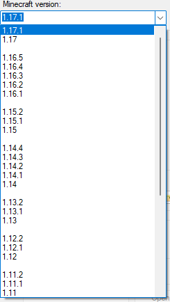
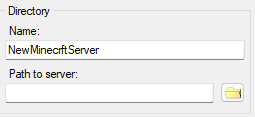
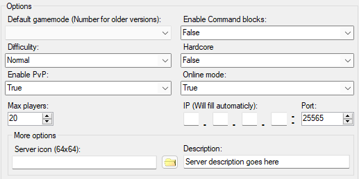
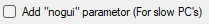
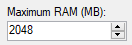
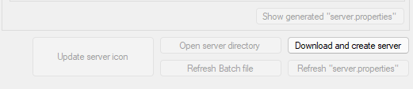

Instruction for
MCServerSetup
v1.1
Date: 30.08.21
Return
Step 0: Once you start the program, you will see this window:

Step 1: Choose Server Core (There is no versions for Forge, it will be fixed in future versions):
Vanilla(By Mojang),
Spigot(Support plugins),
Forge(Support
mods)

| Server Core |
Supports datapacks |
Supports plugins |
Supports mods |
| Vanilla |
✓ |
|
|
| Spigot |
✓ |
✓ |
|
| Forge |
✓ |
|
✓ |
Step 2: Choose Version(1.7.10 - 1.17.1):

Step 3: Choose directories, where you want to place your server

Step 4: Choose custom settings for Minecraft (Note: IP setting may cause crash server on start)(Note2: Icon must be 64x64 pixels, Minecraft ignores icons, that does not 64x64 pixels)
More about server properties

Step 4.1: When configuring the server, a Batch file will be created that starts the server,
if you do not want to see the server's User Interface, you can select the "nogui" item, in this case there will only be a console interface

Step 5: Choose Maximum RAM for server in MegaBytes

Note: Unavailable buttons may become available after installing and configuring the server

Step 7: Download server, and enjoy!
Have any questions? Contact me!